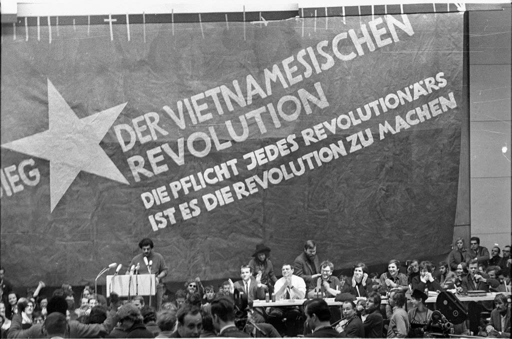
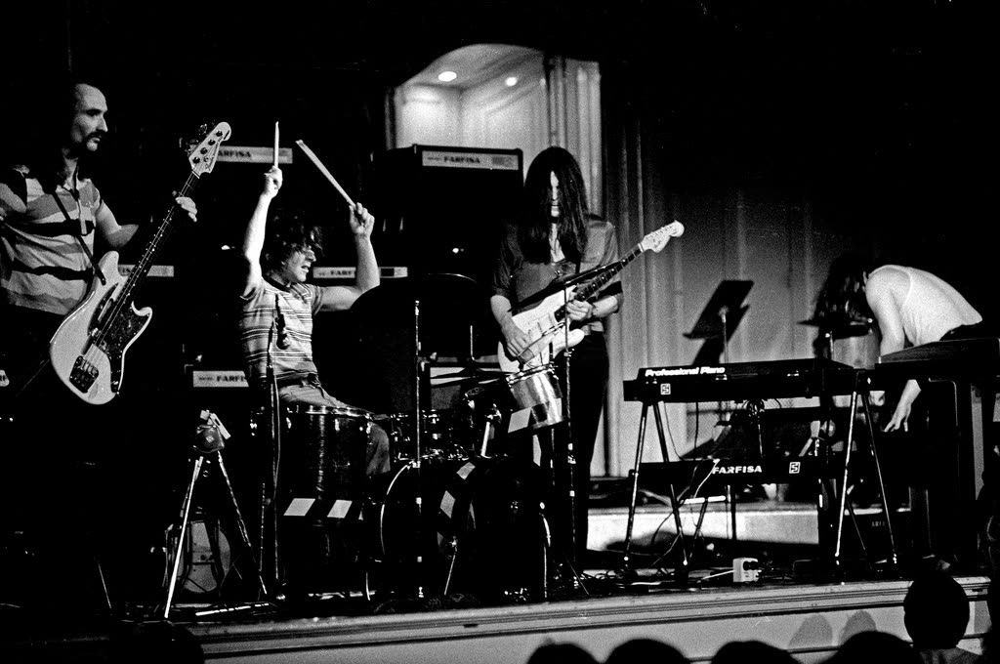
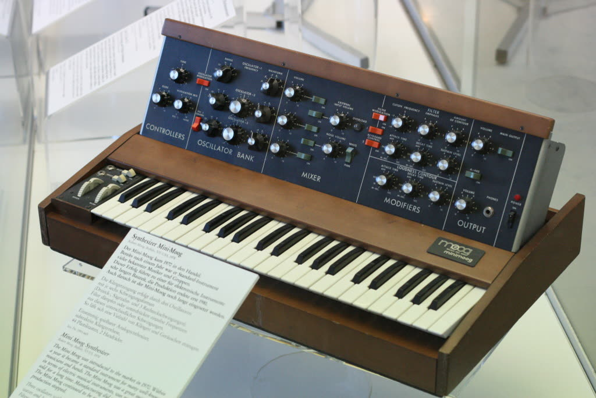
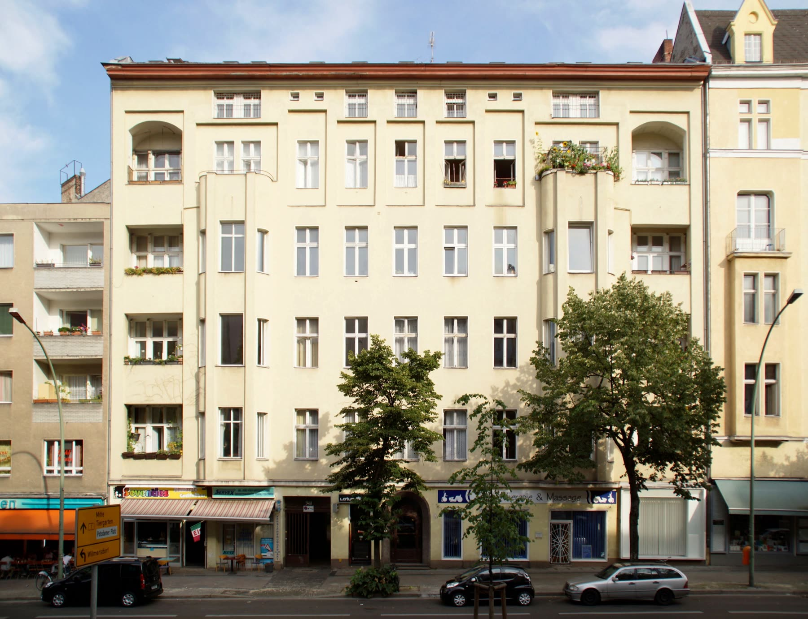
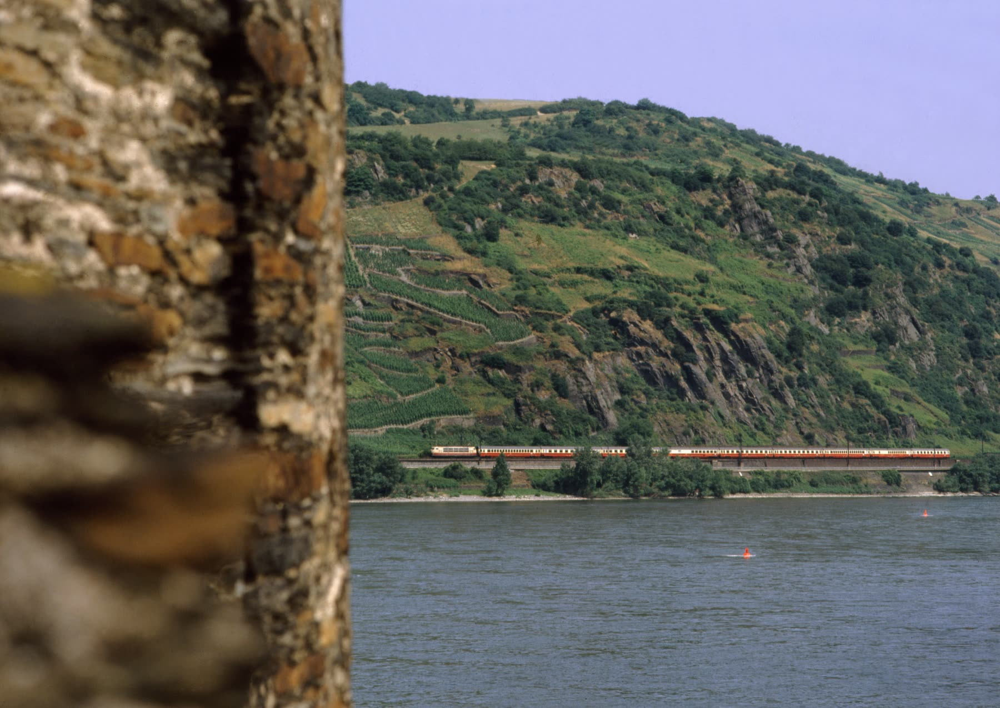

SoR Magazine #2 · Krautrock · tot slot
Tijdlijn
Van het uur nul tot Kid A: blader door vijfenvijftig jaar Duitse muziek, met een fragment bij bijna elk jaar.
Scroll, sleep of gebruik de pijltjes →
Het uur nul
Duitsland capituleert en wordt in vier zones verdeeld. De Duitsers spreken van de Stunde Null.

De Beatles in Hamburg
De Beatles spelen maandenlang in de clubs van Hamburg. Overal in West-Duitsland ontstaan beatbands die Engels zingen.
De Auschwitzprocessen
In Frankfurt beginnen de processen tegen kampbewakers van Auschwitz. Jongeren gaan vragen stellen aan hun ouders.

Benno Ohnesorg
Op 2 juni schiet een politieman in West-Berlijn de student Benno Ohnesorg dood. De studentenbeweging groeit.
Essener Songtage
Het eerste grote popfestival van West-Duitsland, met Tangerine Dream, Amon Düül en Guru Guru. In Keulen begint Can.



Tago Mago
Can brengt de dubbelplaat Tago Mago uit, met Damo Suzuki als zanger. Faust debuteert op doorzichtig vinyl.



Autobahn en Phaedra
Kraftwerk rijdt met een Minimoog over de snelweg, Tangerine Dream laat de sequencer borrelen.



Bowie naar Berlijn
David Bowie en Iggy Pop verhuizen naar de Hauptstraße in Schöneberg.

Low, Heroes en de TEE
Bowie maakt Low en Heroes. Kraftwerk zingt in Trans Europa Express over Iggy Pop en David Bowie.


De Muur valt
In juli loopt de eerste Love Parade door West-Berlijn, in november valt de Muur. Techno wordt het geluid van het nieuwe Berlijn.